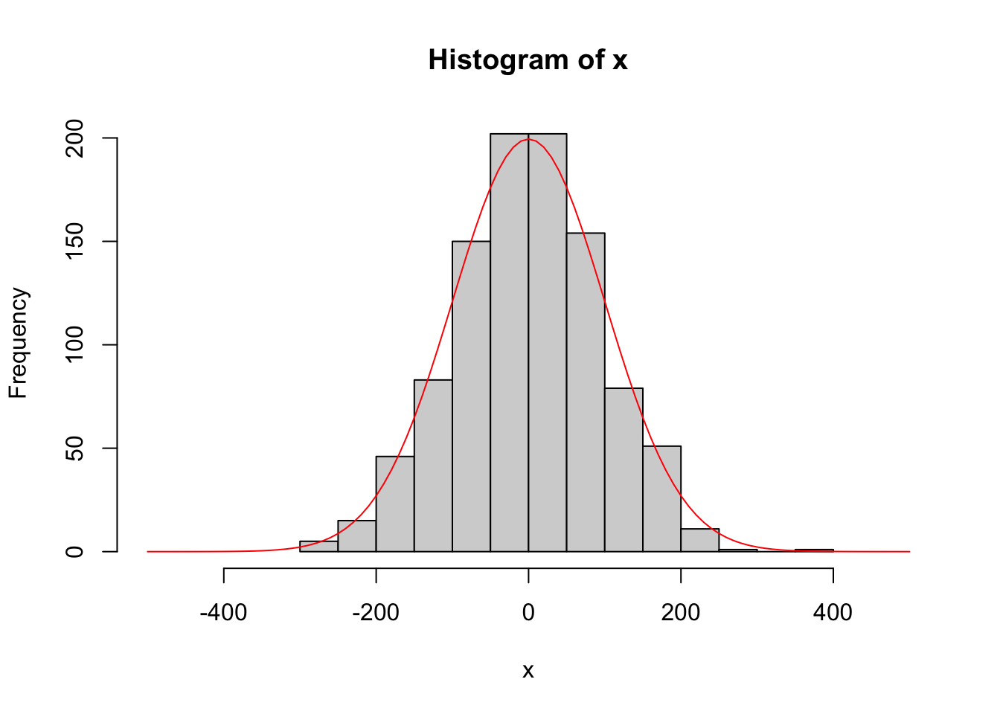
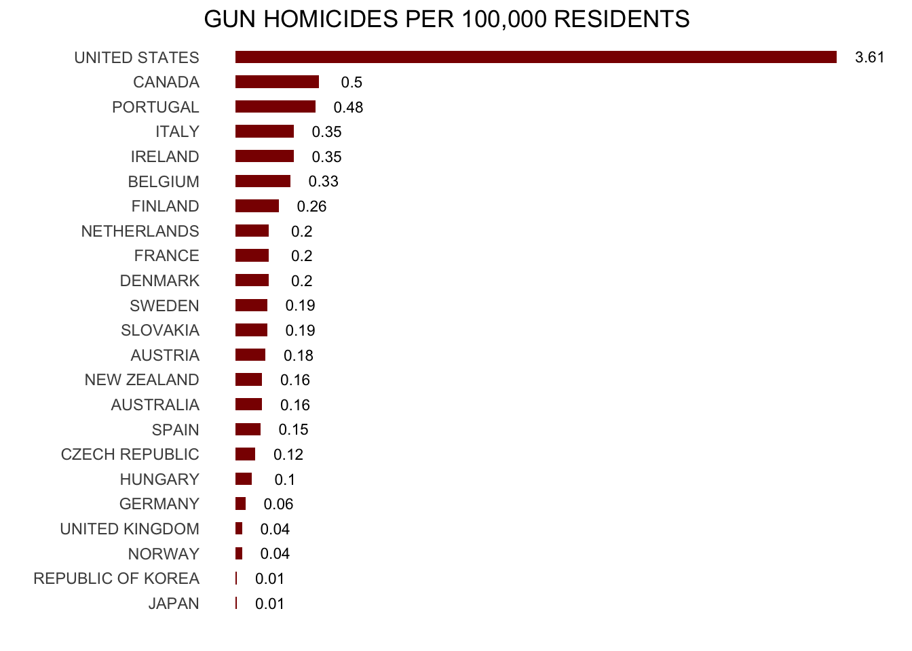
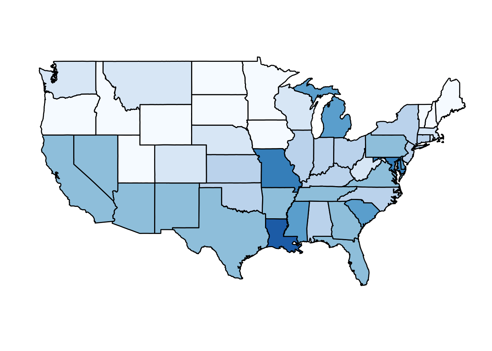
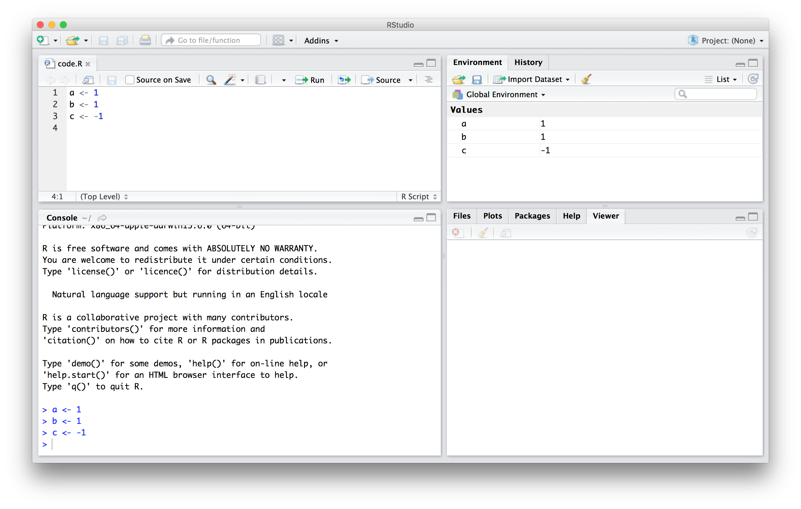
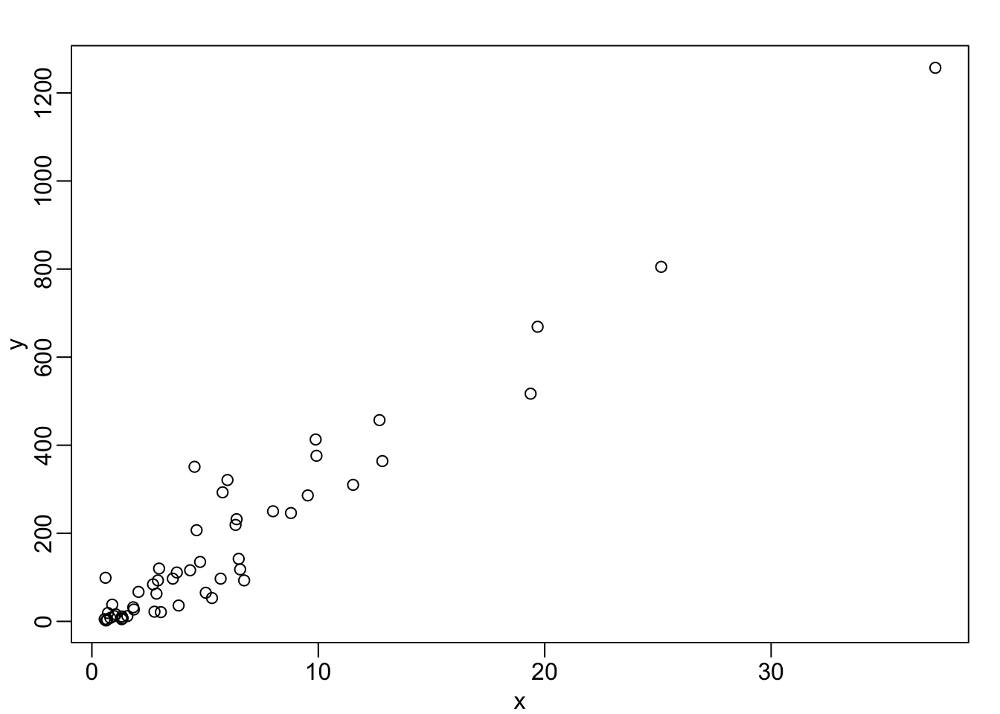
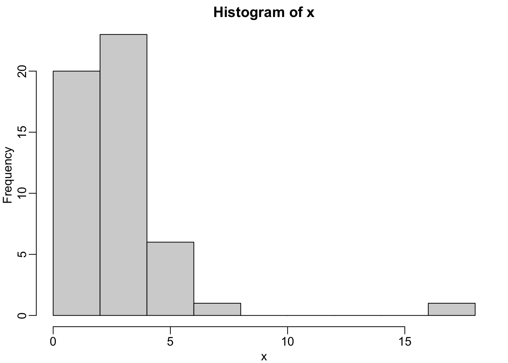
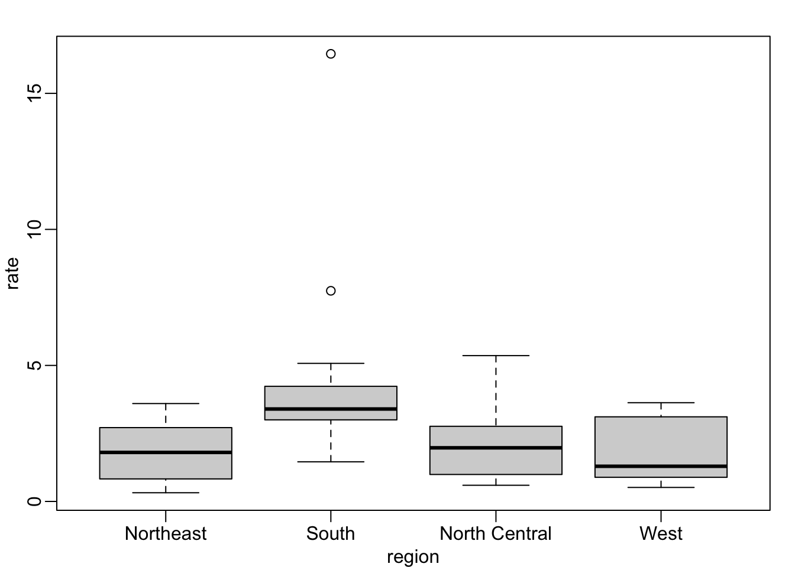
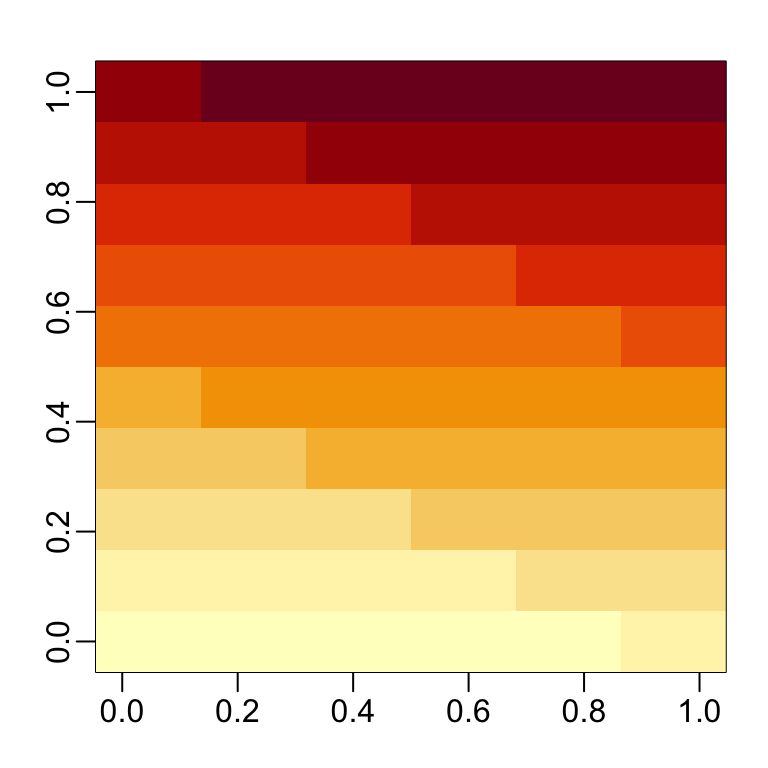

3+4[1] 7y <- 3+4
y[1] 7y_log <- log(y)
y_log[1] 1.94591Everything is an object.
Everything has a name.
You do things using functions.
Functions come pre-written in packages (i.e. “libraries”), although you can — and should — write your own functions too.
–
Points 1. and 2. can be summarised as an object-orientated programming (OOP) approach. - This may sound super abstract now, but we’ll see lots of examples over the coming weeks that will make things clear.
3+4[1] 7y <- 3+4
y[1] 7y_log <- log(y)
y_log[1] 1.94591R?RstudioR analyses in polished RMarkdown files


R resourcesRR installed
RRStudio
Open up your laptops. For the remainder of this first lecture, we’re going continue playing around with ggplot2 (i.e. livecoding).
If you don’t have them already, install the ggplot2 and gapminder packages via either: - Console: Enter install.packages(c("ggplot2", "gapminder"), dependencies=T). - RStudio: Click the “Packages” tab in the bottom-right window pane. Then click “Install” and search for these two packages.

Once the packages are installed, load them into your R session with the library() function.
library(ggplot2)
library(gapminder) ## We're just using this package for the gapminder dataNotice too that you don’t need quotes around the package names any more. Reason: R now recognises these packages as defined objects with given names. (“Everything in R is an object and everything has a name.”)
–
PS — A convenient way to combine the package installation and loading steps is with the pacman package’s p_load() function. If you run pacman::p_load(ggplot, gapminder) it will first look to see whether it needs to install either package before loading them. Clever. - We’ll get to this next week, but if you want to run a function from an (installed) package without loading it, you can use the PACKAGE::package_function() syntax.
RRcode chunks in RMarkdown# symbols[]R follows the normal priority of mathematical evaluation (PEDMAS)RInput code chunk and then output
4*4[1] 16Input code chunk and then output
(4+3*2^2)[1] 16<- operator.R is case sensitive.x <- 2
x * 3[1] 6y <- x * 3
y - 2[1] 4These do not work
3y <- 3
3*y <- 3x <- 12
x+2[1] 14x^2[1] 144log(x)[1] 2.484907log - is a built in function of R, and therefore the object of the function needs to be put in parenthesesprint commandy <- 67
print(y)[1] 67x <- 124
z <- (x*y)^2
print(z)[1] 69022864c stands for concatenatex <- "I Love"
print (x)[1] "I Love"y <- "Biostatistics"
print (y)[1] "Biostatistics"z <- c(x,y)
print (z)[1] "I Love" "Biostatistics"R thinks in terms of vectors
R user to try to write scripts with that in mindn <- c(2,3,4,2,1,2,4,5,10,8,9)
print(n) [1] 2 3 4 2 1 2 4 5 10 8 9z <- n +3
print(z) [1] 5 6 7 5 4 5 7 8 13 11 12x is now what is called a list of character values (“I Love”).factors, and we can redefine our character variables as factors.x_factor <- as.factor(x)
print (x_factor)[1] I Love
Levels: I LoveR “sees” a variable using str() or class() functions.str(x) chr "I Love"class(x)[1] "character"
int stands for integers
dbl stands for doubles, or real numbers
chr stands for character vectors, or strings
dttm stands for date-times (a date + a time)
lgl stands for logical, vectors that contain only TRUE or FALSE
fctr stands for factors, which R uses to represent categorical variables with fixed possible values
date stands for dates
FALSETRUENA which is ‘not available’.R numbers are doubles by default.NANaN which is ‘not a number’Inf-InfMany functions exist to operate on vectors.
mean(n)
median(n)
var(n)
log(n)
exp(n)
sqrt(n)
sum(n)
length(n)
sample(n, replace = T) #has an additional argument (replace=T)R and it is easy enough to write your own functions if none already exist to do what you want to do.- help(mean)
- ?mean
- example(mean)
- help.search("mean")
- apropos("mean")
- args(mean)seqsampleseq_1 <- seq(0.0, 10.0, by = 0.1)
print(seq_1) [1] 0.0 0.1 0.2 0.3 0.4 0.5 0.6 0.7 0.8 0.9 1.0 1.1 1.2 1.3 1.4
[16] 1.5 1.6 1.7 1.8 1.9 2.0 2.1 2.2 2.3 2.4 2.5 2.6 2.7 2.8 2.9
[31] 3.0 3.1 3.2 3.3 3.4 3.5 3.6 3.7 3.8 3.9 4.0 4.1 4.2 4.3 4.4
[46] 4.5 4.6 4.7 4.8 4.9 5.0 5.1 5.2 5.3 5.4 5.5 5.6 5.7 5.8 5.9
[61] 6.0 6.1 6.2 6.3 6.4 6.5 6.6 6.7 6.8 6.9 7.0 7.1 7.2 7.3 7.4
[76] 7.5 7.6 7.7 7.8 7.9 8.0 8.1 8.2 8.3 8.4 8.5 8.6 8.7 8.8 8.9
[91] 9.0 9.1 9.2 9.3 9.4 9.5 9.6 9.7 9.8 9.9 10.0seq_2 <- seq(10.0, 0.0, by = -0.1)
print(seq_2) [1] 10.0 9.9 9.8 9.7 9.6 9.5 9.4 9.3 9.2 9.1 9.0 8.9 8.8 8.7 8.6
[16] 8.5 8.4 8.3 8.2 8.1 8.0 7.9 7.8 7.7 7.6 7.5 7.4 7.3 7.2 7.1
[31] 7.0 6.9 6.8 6.7 6.6 6.5 6.4 6.3 6.2 6.1 6.0 5.9 5.8 5.7 5.6
[46] 5.5 5.4 5.3 5.2 5.1 5.0 4.9 4.8 4.7 4.6 4.5 4.4 4.3 4.2 4.1
[61] 4.0 3.9 3.8 3.7 3.6 3.5 3.4 3.3 3.2 3.1 3.0 2.9 2.8 2.7 2.6
[76] 2.5 2.4 2.3 2.2 2.1 2.0 1.9 1.8 1.7 1.6 1.5 1.4 1.3 1.2 1.1
[91] 1.0 0.9 0.8 0.7 0.6 0.5 0.4 0.3 0.2 0.1 0.0seq_square <- (seq_2)*(seq_2)
print(seq_square) [1] 100.00 98.01 96.04 94.09 92.16 90.25 88.36 86.49 84.64 82.81
[11] 81.00 79.21 77.44 75.69 73.96 72.25 70.56 68.89 67.24 65.61
[21] 64.00 62.41 60.84 59.29 57.76 56.25 54.76 53.29 51.84 50.41
[31] 49.00 47.61 46.24 44.89 43.56 42.25 40.96 39.69 38.44 37.21
[41] 36.00 34.81 33.64 32.49 31.36 30.25 29.16 28.09 27.04 26.01
[51] 25.00 24.01 23.04 22.09 21.16 20.25 19.36 18.49 17.64 16.81
[61] 16.00 15.21 14.44 13.69 12.96 12.25 11.56 10.89 10.24 9.61
[71] 9.00 8.41 7.84 7.29 6.76 6.25 5.76 5.29 4.84 4.41
[81] 4.00 3.61 3.24 2.89 2.56 2.25 1.96 1.69 1.44 1.21
[91] 1.00 0.81 0.64 0.49 0.36 0.25 0.16 0.09 0.04 0.01
[101] 0.00seq_square_new <- (seq_2)^2
print(seq_square_new) [1] 100.00 98.01 96.04 94.09 92.16 90.25 88.36 86.49 84.64 82.81
[11] 81.00 79.21 77.44 75.69 73.96 72.25 70.56 68.89 67.24 65.61
[21] 64.00 62.41 60.84 59.29 57.76 56.25 54.76 53.29 51.84 50.41
[31] 49.00 47.61 46.24 44.89 43.56 42.25 40.96 39.69 38.44 37.21
[41] 36.00 34.81 33.64 32.49 31.36 30.25 29.16 28.09 27.04 26.01
[51] 25.00 24.01 23.04 22.09 21.16 20.25 19.36 18.49 17.64 16.81
[61] 16.00 15.21 14.44 13.69 12.96 12.25 11.56 10.89 10.24 9.61
[71] 9.00 8.41 7.84 7.29 6.76 6.25 5.76 5.29 4.84 4.41
[81] 4.00 3.61 3.24 2.89 2.56 2.25 1.96 1.69 1.44 1.21
[91] 1.00 0.81 0.64 0.49 0.36 0.25 0.16 0.09 0.04 0.01
[101] 0.00x <- rnorm (n = 10000, mean = 0, sd = 10)
y <- sample (1:10000, 10000, replace = T)
xy <- cbind(x,y)
plot(xy)
x <- rnorm (10000, 0, 10)
y <- sample (1:10000, 10000, replace = T)
xy <- cbind(x,y)
hist(x)
x <- rnorm (10000, 0, 10)
y <- sample (???, 10000, replace = ???)dnorm() generates the probability density, which can be plotted using the curve() function.add=TRUEx <-rnorm(1000, 0, 100)
hist(x, xlim = c(-500,500))
curve(50000*dnorm(x, 0, 100), xlim = c(-500,500), add=TRUE, col='Red')
RR you can generate your own random data set drawn from nearly any distribution very easily.habitat <- factor(c("mixed", "wet", "wet", "wet", "dry", "dry", "dry","mixed"))
temp <- c(3.4, 3.4, 8.4, 3, 5.6, 8.1, 8.3, 4.5)
elevation <- c(0, 9.2, 3.8, 5, 5.6, 4.1, 7.1, 5.3)mydata <- data.frame(habitat, temp, elevation)
row.names(mydata) <- c("Reedy Lake", "Pearcadale", "Warneet", "Cranbourne", "Lysterfield", "Red Hill", "Devilbend", "Olinda")
head(mydata) habitat temp elevation
Reedy Lake mixed 3.4 0.0
Pearcadale wet 3.4 9.2
Warneet wet 8.4 3.8
Cranbourne wet 3.0 5.0
Lysterfield dry 5.6 5.6
Red Hill dry 8.1 4.1R is being able to import data from an external source
R.R look in the PWD, whereas a full path can also be usedYourFile <- read.table('yourfile.csv', header=T, row.names=1, sep=',')
YourFile <- read.csv('yourfile.csv', header=T, row.names=1, sep=',')
YourFile <- read.table('yourfile.txt', header=T, row.names=1, sep='\t')write.csv(YourFile, "yourfile.csv", quote=F, row.names=T, sep=",")
write.table(YourFile, "yourfile.txt", quote=F, row.names=T, sep="\t")R FunctionsR can guess what you mean because of order…x <- rnorm(1000, 0, 10) #n=, mean=, sd=
x[1:10] [1] -13.1852710 -1.3471838 0.8931803 -17.1634877 7.8245106 10.6315146
[7] 20.1115541 1.1959889 -2.2758937 -12.7012207R and get something you really didn’t want…x2 <- rnorm(10, 1000, 0) #n=, mean=, sd=
x2 [1] 1000 1000 1000 1000 1000 1000 1000 1000 1000 1000R Functionsset.seed(145)
x <- rnorm(n=1000, mean=0, sd=10) #n=, mean=, sd=
x[1:10] [1] 6.869129 10.663631 5.367006 19.060287 10.631596 13.703436 5.277918
[8] 4.030967 11.677516 7.926794set.seed(145)
x2 <- rnorm(sd=10, n=1000, mean=0) #n=, mean=, sd=
x2[1:10] [1] 6.869129 10.663631 5.367006 19.060287 10.631596 13.703436 5.277918
[8] 4.030967 11.677516 7.926794R, that allows you to analyze just a subset of the data.print (YourFile[,2])
print (YourFile$temp)
print (YourFile[2,])
plot (YourFile$temp, YourFile$elevation)x <- (YourFile[,2])
y <- (YourFile$temp)
z <- (YourFile$elevation)
plot (y, z)tapply(YourFile$temp, YourFile$habitat, mean)
tapply(YourFile$temp, YourFile$habitat, var)In this book, we will be using the R software environment for all our analysis. You will learn R and data analysis techniques simultaneously. To follow along you will therefore need access to R. We also recommend the use of an integrated development environment (IDE), such as RStudio, to save your work. Note that it is common for a course or workshop to offer access to an R environment and an IDE through your web browser, as done by RStudio cloud1. If you have access to such a resource, you don’t need to install R and RStudio. However, if you intend on becoming an advanced data analyst, we highly recommend installing these tools on your computer2. Both R and RStudio are free and available online.
Imagine you live in Europe and are offered a job in a US company with many locations across all states. It is a great job, but news with headlines such as US Gun Homicide Rate Higher Than Other Developed Countries3 have you worried. Charts like this may concern you even more:
Or even worse, this version from everytown.org:
── Attaching core tidyverse packages ──────────────────────── tidyverse 2.0.0 ──
✔ dplyr 1.1.4 ✔ readr 2.1.5
✔ forcats 1.0.0 ✔ stringr 1.5.1
✔ lubridate 1.9.4 ✔ tibble 3.2.1
✔ purrr 1.0.4 ✔ tidyr 1.3.1
── Conflicts ────────────────────────────────────────── tidyverse_conflicts() ──
✖ dplyr::filter() masks stats::filter()
✖ dplyr::lag() masks stats::lag()
ℹ Use the conflicted package (<http://conflicted.r-lib.org/>) to force all conflicts to become errors
But then you remember that the US is a large and diverse country with 50 very different states as well as the District of Columbia (DC).
Warning: The `guide` argument in `scale_*()` cannot be `FALSE`. This was deprecated in
ggplot2 3.3.4.
ℹ Please use "none" instead.
California, for example, has a larger population than Canada, and 20 US states have populations larger than that of Norway. In some respects, the variability across states in the US is akin to the variability across countries in Europe. Furthermore, although not included in the charts above, the murder rates in Lithuania, Ukraine, and Russia are higher than 4 per 100,000. So perhaps the news reports that worried you are too superficial. You have options of where to live and want to determine the safety of each particular state. We will gain some insights by examining data related to gun homicides in the US during 2010 using R.
Before we get started with our example, we need to cover logistics as well as some of the very basic building blocks that are required to gain more advanced R skills. Be aware that the usefulness of some of these building blocks may not be immediately obvious, but later in the book you will appreciate having mastered these skills.
Before we get started with the motivating dataset, we need to cover the very basics of R.
Suppose a high school student asks us for help solving several quadratic equations of the form \(ax^2+bx+c = 0\). The quadratic formula gives us the solutions:
\[ \frac{-b - \sqrt{b^2 - 4ac}}{2a}\,\, \mbox{ and } \frac{-b + \sqrt{b^2 - 4ac}}{2a} \] which of course change depending on the values of \(a\), \(b\), and \(c\). One advantage of programming languages is that we can define variables and write expressions with these variables, similar to how we do so in math, but obtain a numeric solution. We will write out general code for the quadratic equation below, but if we are asked to solve \(x^2 + x -1 = 0\), then we define:
a <- 1
b <- 1
c <- -1which stores the values for later use. We use <- to assign values to the variables.
We can also assign values using = instead of <-, but we recommend against using = to avoid confusion.
Copy and paste the code above into your console to define the three variables. Note that R does not print anything when we make this assignment. This means the objects were defined successfully. Had you made a mistake, you would have received an error message.
To see the value stored in a variable, we simply ask R to evaluate a and it shows the stored value:
a[1] 1A more explicit way to ask R to show us the value stored in a is using print like this:
print(a)[1] 1We use the term object to describe stuff that is stored in R. Variables are examples, but objects can also be more complicated entities such as functions, which are described later.
As we define objects in the console, we are actually changing the workspace. You can see all the variables saved in your workspace by typing:
ls() [1] "a" "b" "c" "dat"
[5] "elevation" "habitat" "murders" "mydata"
[9] "n" "seq_1" "seq_2" "seq_square"
[13] "seq_square_new" "temp" "x" "x_factor"
[17] "x2" "xy" "y" "y_log"
[21] "z" In RStudio, the Environment tab shows the values:

We should see a, b, and c. If you try to recover the value of a variable that is not in your workspace, you receive an error. For example, if you type x you will receive the following message: Error: object 'x' not found.
Now since these values are saved in variables, to obtain a solution to our equation, we use the quadratic formula:
(-b + sqrt(b^2 - 4*a*c) ) / ( 2*a )[1] 0.618034(-b - sqrt(b^2 - 4*a*c) ) / ( 2*a )[1] -1.618034Once you define variables, the data analysis process can usually be described as a series of functions applied to the data. R includes several predefined functions and most of the analysis pipelines we construct make extensive use of these.
We already used the install.packages, library, and ls functions. We also used the function sqrt to solve the quadratic equation above. There are many more prebuilt functions and even more can be added through packages. These functions do not appear in the workspace because you did not define them, but they are available for immediate use.
In general, we need to use parentheses to evaluate a function. If you type ls, the function is not evaluated and instead R shows you the code that defines the function. If you type ls() the function is evaluated and, as seen above, we see objects in the workspace.
Unlike ls, most functions require one or more arguments. Below is an example of how we assign an object to the argument of the function log. Remember that we earlier defined a to be 1:
log(8)[1] 2.079442log(a) [1] 0You can find out what the function expects and what it does by reviewing the very useful manuals included in R. You can get help by using the help function like this:
help("log")For most functions, we can also use this shorthand:
?logThe help page will show you what arguments the function is expecting. For example, log needs x and base to run. However, some arguments are required and others are optional. You can determine which arguments are optional by noting in the help document that a default value is assigned with =. Defining these is optional. For example, the base of the function log defaults to base = exp(1) making log the natural log by default.
If you want a quick look at the arguments without opening the help system, you can type:
args(log)function (x, base = exp(1))
NULLYou can change the default values by simply assigning another object:
log(8, base = 2)[1] 3Note that we have not been specifying the argument x as such:
log(x = 8, base = 2)[1] 3The above code works, but we can save ourselves some typing: if no argument name is used, R assumes you are entering arguments in the order shown in the help file or by args. So by not using the names, it assumes the arguments are x followed by base:
log(8,2)[1] 3If using the arguments’ names, then we can include them in whatever order we want:
log(base = 2, x = 8)[1] 3To specify arguments, we must use =, and cannot use <-.
There are some exceptions to the rule that functions need the parentheses to be evaluated. Among these, the most commonly used are the arithmetic and relational operators. For example:
2 ^ 3[1] 8You can see the arithmetic operators by typing:
help("+") or
?"+"and the relational operators by typing:
help(">") or
?">"There are several datasets that are included for users to practice and test out functions. You can see all the available datasets by typing:
data()This shows you the object name for these datasets. These datasets are objects that can be used by simply typing the name. For example, if you type:
co2R will show you Mauna Loa atmospheric CO2 concentration data.
Other prebuilt objects are mathematical quantities, such as the constant \(\pi\) and \(\infty\):
pi[1] 3.141593Inf+1[1] InfWe have used the letters a, b, and c as variable names, but variable names can be almost anything. Some basic rules in R are that variable names have to start with a letter, can’t contain spaces, and should not be variables that are predefined in R. For example, don’t name one of your variables install.packages by typing something like install.packages <- 2.
A nice convention to follow is to use meaningful words that describe what is stored, use only lower case, and use underscores as a substitute for spaces. For the quadratic equations, we could use something like this:
solution_1 <- (-b + sqrt(b^2 - 4*a*c)) / (2*a)
solution_2 <- (-b - sqrt(b^2 - 4*a*c)) / (2*a)For more advice, we highly recommend studying Hadley Wickham’s style guide4.
Values remain in the workspace until you end your session or erase them with the function rm. But workspaces also can be saved for later use. In fact, when you quit R, the program asks you if you want to save your workspace. If you do save it, the next time you start R, the program will restore the workspace.
We actually recommend against saving the workspace this way because, as you start working on different projects, it will become harder to keep track of what is saved. Instead, we recommend you assign the workspace a specific name. You can do this by using the function save or save.image. To load, use the function load. When saving a workspace, we recommend the suffix rda or RData. In RStudio, you can also do this by navigating to the Session tab and choosing Save Workspace as. You can later load it using the Load Workspace options in the same tab. You can read the help pages on save, save.image, and load to learn more.
To solve another equation such as \(3x^2 + 2x -1\), we can copy and paste the code above and then redefine the variables and recompute the solution:
a <- 3
b <- 2
c <- -1
(-b + sqrt(b^2 - 4*a*c)) / (2*a)
(-b - sqrt(b^2 - 4*a*c)) / (2*a)By creating and saving a script with the code above, we would not need to retype everything each time and, instead, simply change the variable names. Try writing the script above into an editor and notice how easy it is to change the variables and receive an answer.
If a line of R code starts with the symbol #, it is not evaluated. We can use this to write reminders of why we wrote particular code. For example, in the script above we could add:
## Code to compute solution to quadratic equation of the form ax^2 + bx + c
## define the variables
a <- 3
b <- 2
c <- -1
## now compute the solution
(-b + sqrt(b^2 - 4*a*c)) / (2*a)
(-b - sqrt(b^2 - 4*a*c)) / (2*a)1. What is the sum of the first 100 positive integers? The formula for the sum of integers \(1\) through \(n\) is \(n(n+1)/2\). Define \(n=100\) and then use R to compute the sum of \(1\) through \(100\) using the formula. What is the sum?
2. Now use the same formula to compute the sum of the integers from 1 through 1,000.
3. Look at the result of typing the following code into R:
n <- 1000
x <- seq(1, n)
sum(x)Based on the result, what do you think the functions seq and sum do? You can use help.
sum creates a list of numbers and seq adds them up.seq creates a list of numbers and sum adds them up.seq creates a random list and sum computes the sum of 1 through 1,000.sum always returns the same number.4. In math and programming, we say that we evaluate a function when we replace the argument with a given number. So if we type sqrt(4), we evaluate the sqrt function. In R, you can evaluate a function inside another function. The evaluations happen from the inside out. Use one line of code to compute the log, in base 10, of the square root of 100.
5. Which of the following will always return the numeric value stored in x? You can try out examples and use the help system if you want.
log(10^x)log10(x^10)log(exp(x))exp(log(x, base = 2))Variables in R can be of different types. For example, we need to distinguish numbers from character strings and tables from simple lists of numbers. The function class helps us determine what type of object we have:
a <- 2
class(a)[1] "numeric"To work efficiently in R, it is important to learn the different types of variables and what we can do with these.
Up to now, the variables we have defined are just one number. This is not very useful for storing data. The most common way of storing a dataset in R is in a data frame. Conceptually, we can think of a data frame as a table with rows representing observations and the different variables reported for each observation defining the columns. Data frames are particularly useful for datasets because we can combine different data types into one object.
A large proportion of data analysis challenges start with data stored in a data frame. For example, we stored the data for our motivating example in a data frame. You can access this dataset by loading the dslabs library and loading the murders dataset using the data function:
library(dslabs)
data(murders)To see that this is in fact a data frame, we type:
class(murders)[1] "data.frame"The function str is useful for finding out more about the structure of an object:
str(murders)'data.frame': 51 obs. of 5 variables:
$ state : chr "Alabama" "Alaska" "Arizona" "Arkansas" ...
$ abb : chr "AL" "AK" "AZ" "AR" ...
$ region : Factor w/ 4 levels "Northeast","South",..: 2 4 4 2 4 4 1 2 2 2 ...
$ population: num 4779736 710231 6392017 2915918 37253956 ...
$ total : num 135 19 232 93 1257 ...This tells us much more about the object. We see that the table has 51 rows (50 states plus DC) and five variables. We can show the first six lines using the function head:
head(murders) state abb region population total
1 Alabama AL South 4779736 135
2 Alaska AK West 710231 19
3 Arizona AZ West 6392017 232
4 Arkansas AR South 2915918 93
5 California CA West 37253956 1257
6 Colorado CO West 5029196 65In this dataset, each state is considered an observation and five variables are reported for each state.
Before we go any further in answering our original question about different states, let’s learn more about the components of this object.
$For our analysis, we will need to access the different variables represented by columns included in this data frame. To do this, we use the accessor operator $ in the following way:
murders$population [1] 4779736 710231 6392017 2915918 37253956 5029196 3574097 897934
[9] 601723 19687653 9920000 1360301 1567582 12830632 6483802 3046355
[17] 2853118 4339367 4533372 1328361 5773552 6547629 9883640 5303925
[25] 2967297 5988927 989415 1826341 2700551 1316470 8791894 2059179
[33] 19378102 9535483 672591 11536504 3751351 3831074 12702379 1052567
[41] 4625364 814180 6346105 25145561 2763885 625741 8001024 6724540
[49] 1852994 5686986 563626But how did we know to use population? Previously, by applying the function str to the object murders, we revealed the names for each of the five variables stored in this table. We can quickly access the variable names using:
names(murders)[1] "state" "abb" "region" "population" "total" It is important to know that the order of the entries in murders$population preserves the order of the rows in our data table. This will later permit us to manipulate one variable based on the results of another. For example, we will be able to order the state names by the number of murders.
Tip: R comes with a very nice auto-complete functionality that saves us the trouble of typing out all the names. Try typing murders$p then hitting the tab key on your keyboard. This functionality and many other useful auto-complete features are available when working in RStudio.
The object murders$population is not one number but several. We call these types of objects vectors. A single number is technically a vector of length 1, but in general we use the term vectors to refer to objects with several entries. The function length tells you how many entries are in the vector:
pop <- murders$population
length(pop)[1] 51This particular vector is numeric since population sizes are numbers:
class(pop)[1] "numeric"In a numeric vector, every entry must be a number.
To store character strings, vectors can also be of class character. For example, the state names are characters:
class(murders$state)[1] "character"As with numeric vectors, all entries in a character vector need to be a character.
Another important type of vectors are logical vectors. These must be either TRUE or FALSE.
z <- 3 == 2
z[1] FALSEclass(z)[1] "logical"Here the == is a relational operator asking if 3 is equal to 2. In R, if you just use one =, you actually assign a variable, but if you use two == you test for equality.
You can see the other relational operators by typing:
?ComparisonIn future sections, you will see how useful relational operators can be.
We discuss more important features of vectors after the next set of exercises.
Advanced: Mathematically, the values in pop are integers and there is an integer class in R. However, by default, numbers are assigned class numeric even when they are round integers. For example, class(1) returns numeric. You can turn them into class integer with the as.integer() function or by adding an L like this: 1L. Note the class by typing: class(1L)
In the murders dataset, we might expect the region to also be a character vector. However, it is not:
class(murders$region)[1] "factor"It is a factor. Factors are useful for storing categorical data. We can see that there are only 4 regions by using the levels function:
levels(murders$region)[1] "Northeast" "South" "North Central" "West" In the background, R stores these levels as integers and keeps a map to keep track of the labels. This is more memory efficient than storing all the characters.
Note that the levels have an order that is different from the order of appearance in the factor object. The default is for the levels to follow alphabetical order. However, often we want the levels to follow a different order. We will see several examples of this in the Data Visualization part of the book. The function reorder lets us change the order of the levels of a factor variable based on a summary computed on a numeric vector. We will demonstrate this with a simple example.
Suppose we want the levels of the region by the total number of murders rather than alphabetical order. If there are values associated with each level, we can use the reorder and specify a data summary to determine the order. The following code takes the sum of the total murders in each region, and reorders the factor following these sums.
region <- murders$region
value <- murders$total
region <- reorder(region, value, FUN = sum)
levels(region)[1] "Northeast" "North Central" "West" "South" The new order is in agreement with the fact that the Northeast has the least murders and the South has the most.
Warning: Factors can be a source of confusion since sometimes they behave like characters and sometimes they do not. As a result, confusing factors and characters are a common source of bugs.
Data frames are a special case of lists. We will cover lists in more detail later, but know that they are useful because you can store any combination of different types. Below is an example of a list we created for you:
record$name
[1] "John Doe"
$student_id
[1] 1234
$grades
[1] 95 82 91 97 93
$final_grade
[1] "A"class(record)[1] "list"As with data frames, you can extract the components of a list with the accessor $. In fact, data frames are a type of list.
record$student_id[1] 1234We can also use double square brackets ([[) like this:
record[["student_id"]][1] 1234You should get used to the fact that in R, there are often several ways to do the same thing, such as accessing entries.
You might also encounter lists without variable names.
record2[[1]]
[1] "John Doe"
[[2]]
[1] 1234If a list does not have names, you cannot extract the elements with $, but you can still use the brackets method and instead of providing the variable name, you provide the list index, like this:
record2[[1]][1] "John Doe"We won’t be using lists until later, but you might encounter one in your own exploration of R. For this reason, we show you some basics here.
Matrices are another type of object that are common in R. Matrices are similar to data frames in that they are two-dimensional: they have rows and columns. However, like numeric, character and logical vectors, entries in matrices have to be all the same type. For this reason data frames are much more useful for storing data, since we can have characters, factors, and numbers in them.
Yet matrices have a major advantage over data frames: we can perform matrix algebra operations, a powerful type of mathematical technique. We do not describe these operations in this book, but much of what happens in the background when you perform a data analysis involves matrices. We cover matrices in more detail in Chapter @ref(matrix-algebra) but describe them briefly here since some of the functions we will learn return matrices.
We can define a matrix using the matrix function. We need to specify the number of rows and columns.
mat <- matrix(1:12, 4, 3)
mat [,1] [,2] [,3]
[1,] 1 5 9
[2,] 2 6 10
[3,] 3 7 11
[4,] 4 8 12You can access specific entries in a matrix using square brackets ([). If you want the second row, third column, you use:
mat[2, 3][1] 10If you want the entire second row, you leave the column spot empty:
mat[2, ][1] 2 6 10Notice that this returns a vector, not a matrix.
Similarly, if you want the entire third column, you leave the row spot empty:
mat[, 3][1] 9 10 11 12This is also a vector, not a matrix.
You can access more than one column or more than one row if you like. This will give you a new matrix.
mat[, 2:3] [,1] [,2]
[1,] 5 9
[2,] 6 10
[3,] 7 11
[4,] 8 12You can subset both rows and columns:
mat[1:2, 2:3] [,1] [,2]
[1,] 5 9
[2,] 6 10We can convert matrices into data frames using the function as.data.frame:
as.data.frame(mat) V1 V2 V3
1 1 5 9
2 2 6 10
3 3 7 11
4 4 8 12You can also use single square brackets ([) to access rows and columns of a data frame:
data("murders")
murders[25, 1][1] "Mississippi"murders[2:3, ] state abb region population total
2 Alaska AK West 710231 19
3 Arizona AZ West 6392017 2321. Load the US murders dataset.
library(dslabs)
data(murders)Use the function str to examine the structure of the murders object. Which of the following best describes the variables represented in this data frame?
str shows no relevant information.2. What are the column names used by the data frame for these five variables?
3. Use the accessor $ to extract the state abbreviations and assign them to the object a. What is the class of this object?
4. Now use the square brackets to extract the state abbreviations and assign them to the object b. Use the identical function to determine if a and b are the same.
5. We saw that the region column stores a factor. You can corroborate this by typing:
class(murders$region)With one line of code, use the function levels and length to determine the number of regions defined by this dataset.
6. The function table takes a vector and returns the frequency of each element. You can quickly see how many states are in each region by applying this function. Use this function in one line of code to create a table of states per region.
In R, the most basic objects available to store data are vectors. As we have seen, complex datasets can usually be broken down into components that are vectors. For example, in a data frame, each column is a vector. Here we learn more about this important class.
We can create vectors using the function c, which stands for concatenate. We use c to concatenate entries in the following way:
codes <- c(380, 124, 818)
codes[1] 380 124 818We can also create character vectors. We use the quotes to denote that the entries are characters rather than variable names.
country <- c("italy", "canada", "egypt")In R you can also use single quotes:
country <- c('italy', 'canada', 'egypt')But be careful not to confuse the single quote ’ with the back quote `.
By now you should know that if you type:
country <- c(italy, canada, egypt)you receive an error because the variables italy, canada, and egypt are not defined. If we do not use the quotes, R looks for variables with those names and returns an error.
Sometimes it is useful to name the entries of a vector. For example, when defining a vector of country codes, we can use the names to connect the two:
codes <- c(italy = 380, canada = 124, egypt = 818)
codes italy canada egypt
380 124 818 The object codes continues to be a numeric vector:
class(codes)[1] "numeric"but with names:
names(codes)[1] "italy" "canada" "egypt" If the use of strings without quotes looks confusing, know that you can use the quotes as well:
codes <- c("italy" = 380, "canada" = 124, "egypt" = 818)
codes italy canada egypt
380 124 818 There is no difference between this function call and the previous one. This is one of the many ways in which R is quirky compared to other languages.
We can also assign names using the names functions:
codes <- c(380, 124, 818)
country <- c("italy","canada","egypt")
names(codes) <- country
codes italy canada egypt
380 124 818 Another useful function for creating vectors generates sequences:
seq(1, 10) [1] 1 2 3 4 5 6 7 8 9 10The first argument defines the start, and the second defines the end which is included. The default is to go up in increments of 1, but a third argument lets us tell it how much to jump by:
seq(1, 10, 2)[1] 1 3 5 7 9If we want consecutive integers, we can use the following shorthand:
1:10 [1] 1 2 3 4 5 6 7 8 9 10When we use these functions, R produces integers, not numerics, because they are typically used to index something:
class(1:10)[1] "integer"However, if we create a sequence including non-integers, the class changes:
class(seq(1, 10, 0.5))[1] "numeric"We use square brackets to access specific elements of a vector. For the vector codes we defined above, we can access the second element using:
codes[2]canada
124 You can get more than one entry by using a multi-entry vector as an index:
codes[c(1,3)]italy egypt
380 818 The sequences defined above are particularly useful if we want to access, say, the first two elements:
codes[1:2] italy canada
380 124 If the elements have names, we can also access the entries using these names. Below are two examples.
codes["canada"]canada
124 codes[c("egypt","italy")]egypt italy
818 380 In general, coercion is an attempt by R to be flexible with data types. When an entry does not match the expected, some of the prebuilt R functions try to guess what was meant before throwing an error. This can also lead to confusion. Failing to understand coercion can drive programmers crazy when attempting to code in R since it behaves quite differently from most other languages in this regard. Let’s learn about it with some examples.
We said that vectors must be all of the same type. So if we try to combine, say, numbers and characters, you might expect an error:
x <- c(1, "canada", 3)But we don’t get one, not even a warning! What happened? Look at x and its class:
x[1] "1" "canada" "3" class(x)[1] "character"R coerced the data into characters. It guessed that because you put a character string in the vector, you meant the 1 and 3 to actually be character strings "1" and “3”. The fact that not even a warning is issued is an example of how coercion can cause many unnoticed errors in R.
R also offers functions to change from one type to another. For example, you can turn numbers into characters with:
x <- 1:5
y <- as.character(x)
y[1] "1" "2" "3" "4" "5"You can turn it back with as.numeric:
as.numeric(y)[1] 1 2 3 4 5This function is actually quite useful since datasets that include numbers as character strings are common.
When a function tries to coerce one type to another and encounters an impossible case, it usually gives us a warning and turns the entry into a special value called an NA for “not available”. For example:
x <- c("1", "b", "3")
as.numeric(x)Warning: NAs introduced by coercion[1] 1 NA 3R does not have any guesses for what number you want when you type b, so it does not try.
As a data scientist you will encounter the NAs often as they are generally used for missing data, a common problem in real-world datasets.
1. Use the function c to create a vector with the average high temperatures in January for Beijing, Lagos, Paris, Rio de Janeiro, San Juan, and Toronto, which are 35, 88, 42, 84, 81, and 30 degrees Fahrenheit. Call the object temp.
2. Now create a vector with the city names and call the object city.
3. Use the names function and the objects defined in the previous exercises to associate the temperature data with its corresponding city.
4. Use the [ and : operators to access the temperature of the first three cities on the list.
5. Use the [ operator to access the temperature of Paris and San Juan.
6. Use the : operator to create a sequence of numbers \(12,13,14,\dots,73\).
7. Create a vector containing all the positive odd numbers smaller than 100.
8. Create a vector of numbers that starts at 6, does not pass 55, and adds numbers in increments of 4/7: 6, 6 + 4/7, 6 + 8/7, and so on. How many numbers does the list have? Hint: use seq and length.
9. What is the class of the following object a <- seq(1, 10, 0.5)?
10. What is the class of the following object a <- seq(1, 10)?
11. The class of class(a<-1) is numeric, not integer. R defaults to numeric and to force an integer, you need to add the letter L. Confirm that the class of 1L is integer.
12. Define the following vector:
x <- c("1", "3", "5")and coerce it to get integers.
Now that we have mastered some basic R knowledge, let’s try to gain some insights into the safety of different states in the context of gun murders.
sortSay we want to rank the states from least to most gun murders. The function sort sorts a vector in increasing order. We can therefore see the largest number of gun murders by typing:
library(dslabs)
data(murders)
sort(murders$total) [1] 2 4 5 5 7 8 11 12 12 16 19 21 22 27 32
[16] 36 38 53 63 65 67 84 93 93 97 97 99 111 116 118
[31] 120 135 142 207 219 232 246 250 286 293 310 321 351 364 376
[46] 413 457 517 669 805 1257However, this does not give us information about which states have which murder totals. For example, we don’t know which state had 1257.
orderThe function order is closer to what we want. It takes a vector as input and returns the vector of indexes that sorts the input vector. This may sound confusing so let’s look at a simple example. We can create a vector and sort it:
x <- c(31, 4, 15, 92, 65)
sort(x)[1] 4 15 31 65 92Rather than sort the input vector, the function order returns the index that sorts input vector:
index <- order(x)
x[index][1] 4 15 31 65 92This is the same output as that returned by sort(x). If we look at this index, we see why it works:
x[1] 31 4 15 92 65order(x)[1] 2 3 1 5 4The second entry of x is the smallest, so order(x) starts with 2. The next smallest is the third entry, so the second entry is 3 and so on.
How does this help us order the states by murders? First, remember that the entries of vectors you access with $ follow the same order as the rows in the table. For example, these two vectors containing state names and abbreviations, respectively, are matched by their order:
murders$state[1:6][1] "Alabama" "Alaska" "Arizona" "Arkansas" "California"
[6] "Colorado" murders$abb[1:6][1] "AL" "AK" "AZ" "AR" "CA" "CO"This means we can order the state names by their total murders. We first obtain the index that orders the vectors according to murder totals and then index the state names vector:
ind <- order(murders$total)
murders$abb[ind] [1] "VT" "ND" "NH" "WY" "HI" "SD" "ME" "ID" "MT" "RI" "AK" "IA" "UT" "WV" "NE"
[16] "OR" "DE" "MN" "KS" "CO" "NM" "NV" "AR" "WA" "CT" "WI" "DC" "OK" "KY" "MA"
[31] "MS" "AL" "IN" "SC" "TN" "AZ" "NJ" "VA" "NC" "MD" "OH" "MO" "LA" "IL" "GA"
[46] "MI" "PA" "NY" "FL" "TX" "CA"According to the above, California had the most murders.
max and which.maxIf we are only interested in the entry with the largest value, we can use max for the value:
max(murders$total)[1] 1257and which.max for the index of the largest value:
i_max <- which.max(murders$total)
murders$state[i_max][1] "California"For the minimum, we can use min and which.min in the same way.
Does this mean California is the most dangerous state? In an upcoming section, we argue that we should be considering rates instead of totals. Before doing that, we introduce one last order-related function: rank.
rankAlthough not as frequently used as order and sort, the function rank is also related to order and can be useful. For any given vector it returns a vector with the rank of the first entry, second entry, etc., of the input vector. Here is a simple example:
x <- c(31, 4, 15, 92, 65)
rank(x)[1] 3 1 2 5 4To summarize, let’s look at the results of the three functions we have introduced:
| original | sort | order | rank |
|---|---|---|---|
| 31 | 4 | 2 | 3 |
| 4 | 15 | 3 | 1 |
| 15 | 31 | 1 | 2 |
| 92 | 65 | 5 | 5 |
| 65 | 92 | 4 | 4 |
Another common source of unnoticed errors in R is the use of recycling. We saw that vectors are added elementwise. So if the vectors don’t match in length, it is natural to assume that we should get an error. But we don’t. Notice what happens:
x <- c(1,2,3)
y <- c(10, 20, 30, 40, 50, 60, 70)
x+yWarning in x + y: longer object length is not a multiple of shorter object
length[1] 11 22 33 41 52 63 71We do get a warning, but no error. For the output, R has recycled the numbers in x. Notice the last digit of numbers in the output.
For these exercises we will use the US murders dataset. Make sure you load it prior to starting.
library(dslabs)
data("murders")1. Use the $ operator to access the population size data and store it as the object pop. Then use the sort function to redefine pop so that it is sorted. Finally, use the [ operator to report the smallest population size.
2. Now instead of the smallest population size, find the index of the entry with the smallest population size. Hint: use order instead of sort.
3. We can actually perform the same operation as in the previous exercise using the function which.min. Write one line of code that does this.
4. Now we know how small the smallest state is and we know which row represents it. Which state is it? Define a variable states to be the state names from the murders data frame. Report the name of the state with the smallest population.
5. You can create a data frame using the data.frame function. Here is a quick example:
temp <- c(35, 88, 42, 84, 81, 30)
city <- c("Beijing", "Lagos", "Paris", "Rio de Janeiro",
"San Juan", "Toronto")
city_temps <- data.frame(name = city, temperature = temp)Use the rank function to determine the population rank of each state from smallest population size to biggest. Save these ranks in an object called ranks, then create a data frame with the state name and its rank. Call the data frame my_df.
6. Repeat the previous exercise, but this time order my_df so that the states are ordered from least populous to most populous. Hint: create an object ind that stores the indexes needed to order the population values. Then use the bracket operator [ to re-order each column in the data frame.
7. The na_example vector represents a series of counts. You can quickly examine the object using:
data("na_example")
str(na_example) int [1:1000] 2 1 3 2 1 3 1 4 3 2 ...However, when we compute the average with the function mean, we obtain an NA:
mean(na_example)[1] NAThe is.na function returns a logical vector that tells us which entries are NA. Assign this logical vector to an object called ind and determine how many NAs does na_example have.
8. Now compute the average again, but only for the entries that are not NA. Hint: remember the ! operator.
California had the most murders, but does this mean it is the most dangerous state? What if it just has many more people than any other state? We can quickly confirm that California indeed has the largest population:
library(dslabs)
data("murders")
murders$state[which.max(murders$population)][1] "California"with over 37 million inhabitants. It is therefore unfair to compare the totals if we are interested in learning how safe the state is. What we really should be computing is the murders per capita. The reports we describe in the motivating section used murders per 100,000 as the unit. To compute this quantity, the powerful vector arithmetic capabilities of R come in handy.
In R, arithmetic operations on vectors occur element-wise. For a quick example, suppose we have height in inches:
inches <- c(69, 62, 66, 70, 70, 73, 67, 73, 67, 70)and want to convert to centimeters. Notice what happens when we multiply inches by 2.54:
inches * 2.54 [1] 175.26 157.48 167.64 177.80 177.80 185.42 170.18 185.42 170.18 177.80In the line above, we multiplied each element by 2.54. Similarly, if for each entry we want to compute how many inches taller or shorter than 69 inches, the average height for males, we can subtract it from every entry like this:
inches - 69 [1] 0 -7 -3 1 1 4 -2 4 -2 1If we have two vectors of the same length, and we sum them in R, they will be added entry by entry as follows:
\[ \begin{pmatrix} a\\ b\\ c\\ d \end{pmatrix} + \begin{pmatrix} e\\ f\\ g\\ h \end{pmatrix} = \begin{pmatrix} a +e\\ b + f\\ c + g\\ d + h \end{pmatrix} \]
The same holds for other mathematical operations, such as -, * and /.
This implies that to compute the murder rates we can simply type:
murder_rate <- murders$total / murders$population * 100000Once we do this, we notice that California is no longer near the top of the list. In fact, we can use what we have learned to order the states by murder rate:
murders$abb[order(murder_rate)] [1] "VT" "NH" "HI" "ND" "IA" "ID" "UT" "ME" "WY" "OR" "SD" "MN" "MT" "CO" "WA"
[16] "WV" "RI" "WI" "NE" "MA" "IN" "KS" "NY" "KY" "AK" "OH" "CT" "NJ" "AL" "IL"
[31] "OK" "NC" "NV" "VA" "AR" "TX" "NM" "CA" "FL" "TN" "PA" "AZ" "GA" "MS" "MI"
[46] "DE" "SC" "MD" "MO" "LA" "DC"1. Previously we created this data frame:
temp <- c(35, 88, 42, 84, 81, 30)
city <- c("Beijing", "Lagos", "Paris", "Rio de Janeiro",
"San Juan", "Toronto")
city_temps <- data.frame(name = city, temperature = temp)Remake the data frame using the code above, but add a line that converts the temperature from Fahrenheit to Celsius. The conversion is \(C = \frac{5}{9} \times (F - 32)\).
2. What is the following sum \(1+1/2^2 + 1/3^2 + \dots 1/100^2\)? Hint: thanks to Euler, we know it should be close to \(\pi^2/6\).
3. Compute the per 100,000 murder rate for each state and store it in the object murder_rate. Then compute the average murder rate for the US using the function mean. What is the average?
R provides a powerful and convenient way of indexing vectors. We can, for example, subset a vector based on properties of another vector. In this section, we continue working with our US murders example, which we can load like this:
library(dslabs)
data("murders")We have now calculated the murder rate using:
murder_rate <- murders$total / murders$population * 100000 Imagine you are moving from Italy where, according to an ABC news report, the murder rate is only 0.71 per 100,000. You would prefer to move to a state with a similar murder rate. Another powerful feature of R is that we can use logicals to index vectors. If we compare a vector to a single number, it actually performs the test for each entry. The following is an example related to the question above:
ind <- murder_rate < 0.71If we instead want to know if a value is less or equal, we can use:
ind <- murder_rate <= 0.71Note that we get back a logical vector with TRUE for each entry smaller than or equal to 0.71. To see which states these are, we can leverage the fact that vectors can be indexed with logicals.
murders$state[ind][1] "Hawaii" "Iowa" "New Hampshire" "North Dakota"
[5] "Vermont" In order to count how many are TRUE, the function sum returns the sum of the entries of a vector and logical vectors get coerced to numeric with TRUE coded as 1 and FALSE as 0. Thus we can count the states using:
sum(ind)[1] 5Suppose we like the mountains and we want to move to a safe state in the western region of the country. We want the murder rate to be at most 1. In this case, we want two different things to be true. Here we can use the logical operator and, which in R is represented with &. This operation results in TRUE only when both logicals are TRUE. To see this, consider this example:
TRUE & TRUE[1] TRUETRUE & FALSE[1] FALSEFALSE & FALSE[1] FALSEFor our example, we can form two logicals:
west <- murders$region == "West"
safe <- murder_rate <= 1and we can use the & to get a vector of logicals that tells us which states satisfy both conditions:
ind <- safe & west
murders$state[ind][1] "Hawaii" "Idaho" "Oregon" "Utah" "Wyoming"whichSuppose we want to look up California’s murder rate. For this type of operation, it is convenient to convert vectors of logicals into indexes instead of keeping long vectors of logicals. The function which tells us which entries of a logical vector are TRUE. So we can type:
ind <- which(murders$state == "California")
murder_rate[ind][1] 3.374138matchIf instead of just one state we want to find out the murder rates for several states, say New York, Florida, and Texas, we can use the function match. This function tells us which indexes of a second vector match each of the entries of a first vector:
ind <- match(c("New York", "Florida", "Texas"), murders$state)
ind[1] 33 10 44Now we can look at the murder rates:
murder_rate[ind][1] 2.667960 3.398069 3.201360%in%If rather than an index we want a logical that tells us whether or not each element of a first vector is in a second, we can use the function %in%. Let’s imagine you are not sure if Boston, Dakota, and Washington are states. You can find out like this:
c("Boston", "Dakota", "Washington") %in% murders$state[1] FALSE FALSE TRUENote that we will be using %in% often throughout the book.
Advanced: There is a connection between match and %in% through which. To see this, notice that the following two lines produce the same index (although in different order):
match(c("New York", "Florida", "Texas"), murders$state)[1] 33 10 44which(murders$state%in%c("New York", "Florida", "Texas"))[1] 10 33 44Start by loading the library and data.
library(dslabs)
data(murders)1. Compute the per 100,000 murder rate for each state and store it in an object called murder_rate. Then use logical operators to create a logical vector named low that tells us which entries of murder_rate are lower than 1.
2. Now use the results from the previous exercise and the function which to determine the indices of murder_rate associated with values lower than 1.
3. Use the results from the previous exercise to report the names of the states with murder rates lower than 1.
4. Now extend the code from exercises 2 and 3 to report the states in the Northeast with murder rates lower than 1. Hint: use the previously defined logical vector low and the logical operator &.
5. In a previous exercise we computed the murder rate for each state and the average of these numbers. How many states are below the average?
6. Use the match function to identify the states with abbreviations AK, MI, and IA. Hint: start by defining an index of the entries of murders$abb that match the three abbreviations, then use the [ operator to extract the states.
7. Use the %in% operator to create a logical vector that answers the question: which of the following are actual abbreviations: MA, ME, MI, MO, MU?
8. Extend the code you used in exercise 7 to report the one entry that is not an actual abbreviation. Hint: use the ! operator, which turns FALSE into TRUE and vice versa, then which to obtain an index.
In Chapter @ref(ggplot2) we describe an add-on package that provides a powerful approach to producing plots in R. We then have an entire part on Data Visualization in which we provide many examples. Here we briefly describe some of the functions that are available in a basic R installation.
plotThe plot function can be used to make scatterplots. Here is a plot of total murders versus population.
x <- murders$population / 10^6
y <- murders$total
plot(x, y)
For a quick plot that avoids accessing variables twice, we can use the with function:
with(murders, plot(population, total))The function with lets us use the murders column names in the plot function. It also works with any data frames and any function.
histWe will describe histograms as they relate to distributions in the Data Visualization part of the book. Here we will simply note that histograms are a powerful graphical summary of a list of numbers that gives you a general overview of the types of values you have. We can make a histogram of our murder rates by simply typing:
x <- with(murders, total / population * 100000)
hist(x)
We can see that there is a wide range of values with most of them between 2 and 3 and one very extreme case with a murder rate of more than 15:
murders$state[which.max(x)][1] "District of Columbia"boxplotBoxplots will also be described in the Data Visualization part of the book. They provide a more terse summary than histograms, but they are easier to stack with other boxplots. For example, here we can use them to compare the different regions:
murders$rate <- with(murders, total / population * 100000)
boxplot(rate~region, data = murders)
We can see that the South has higher murder rates than the other three regions.
imageThe image function displays the values in a matrix using color. Here is a quick example:
x <- matrix(1:120, 12, 10)
image(x)
1. We made a plot of total murders versus population and noted a strong relationship. Not surprisingly, states with larger populations had more murders.
library(dslabs)
data(murders)
population_in_millions <- murders$population/10^6
total_gun_murders <- murders$total
plot(population_in_millions, total_gun_murders)Keep in mind that many states have populations below 5 million and are bunched up. We may gain further insights from making this plot in the log scale. Transform the variables using the log10 transformation and then plot them.
2. Create a histogram of the state populations.
3. Generate boxplots of the state populations by region.